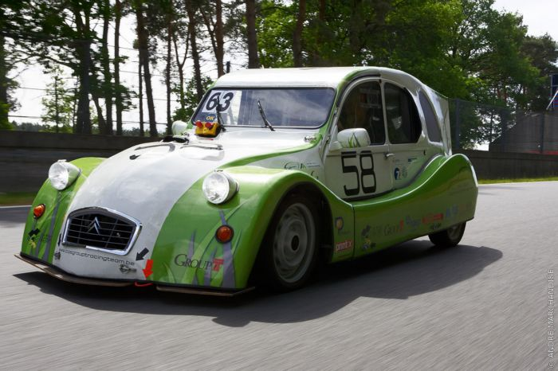

Building real-time wireless data communication
CQS GroepT Racing Team
The Context
I spent May-August 2010 working with a Belgian racing team at GroepT University in Leuven, Belgium. I worked on their electrical sub-team for this internship. The other half of my internship was conceptualizing Aura.
The Project
The CQS Racing team develops vehicles with alternative energy drive trains - Pegasus on biethanol and Odyssee on electricity. Both cars participated in the 24h24' race for 2CVs at Spa-Francorchamps (home of the Belgian Grand Prix). They race against other alternative fuel vehicles. The race is long and the team wants to be able to view real-time vehicle data during the course of the race.
Below is a picture of Odyssee, the electric car. I worked on wireless vehicle data communication between Odyssee and the electrical team sitting in the pitlane.

A fellow intern and I were helping them improve Odyssee before the big race. I worked on reliably transmitting vehicle data from the car on the track to the team in the pit. A second project involved making their data collection software more modular.
Result: We successfully tested the wireless communication between the car and the pit at a test race at Circuite de Bresse in July.
Process
Wireless communication - I worked with Xbee modules to transmit data using the RS232 protocol between the car and pit. Wireless data was read, saved, and analyzed; all was done using LabView, mySQL, and Java. Incoming GPS data was plotted real-time on Google Maps to show the car's position on the track. Below is a picture of the Xbee module we used to transmit data.

Software redesign - I developed a simpler user interface for the team to modularly add new sensors and signals to the data monitoring system. This is useful when they want to track a certain subsystem in the vehicle during a race, or if Odyssee gets electrical updates in the future and new signals are added to the vehicle CAN network.
The Reflection
This was my first exposure to a startup-like environment. I learned lessons on feature ownership and agile development. I improved my skills in Java and picked up any new software skills as I needed them. Learning how to learn is a powerful life skill.